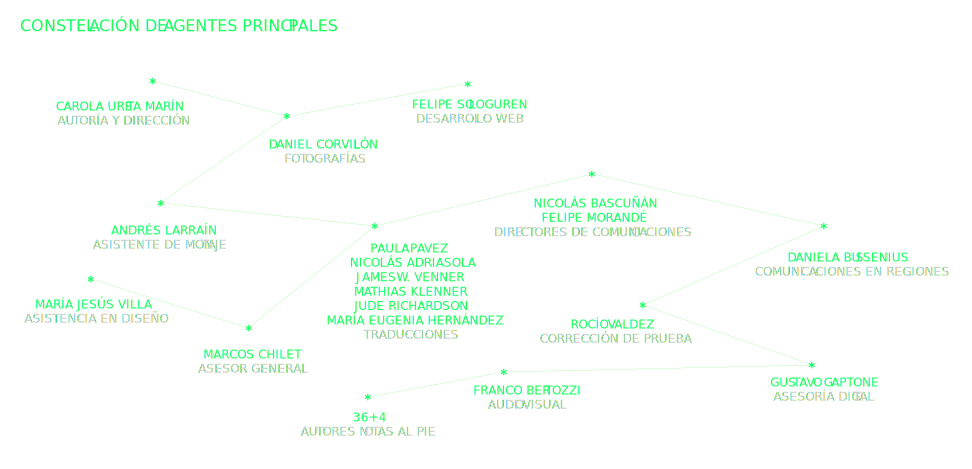

00000
00000
Este proyecto busca resguardar la memoria grabada en los muros de la calle que fue protagonista de las manifestaciones en Santiago durante El Estallido Social–Av. Libertador Bernardo O’Higgins, popularmente conocida como La Alameda– exponiendo los casi 2.4 km de extensión como obra en sí misma. El registro corresponde específicamente al día número 36 del Estallido y está conformado por 136 fotografías contiguas que capturan la vereda sur de La Alameda, desde la calle Seminario hasta Nataniel Cox, ubicada frente a la casa de gobierno en Chile: El Palacio de La Moneda.
La invitación por medio de esta plataforma, es a hacer una ‘caminata virtual’ por este recorrido, leer y observar detenidamente el pergamino de fachadas, compuestas por textos sueltos dispuestos en la calle como si fuera un gran lienzo. Cada uno puede seleccionar libremente e hilvanar su propio tejido discursivo. Del mismo modo, se presenta como una posibilidad para que personas que no estuvieron en Santiago o en Chile durante esta ‘Megacrisis’, puedan experimentar este tránsito continuo por donde muchos ciudadanos gritaron, rayaron, saltaron y marcharon durante las protestas. Además se diseñó un libro digital bilingüe de libre descarga, donde se presenta el proyecto completo en su primera versión (link en el menú principal).
El registro fotográfico de este recorrido permite fijar, cristalizar e inmortalizar la historia de nuestro país, siendo un material a disposición de todxs quienes estén interesados en descubrirlo. El valor del registro de archivo -no sólo de esta crisis social- posibilita generar investigaciones, proyectos y múltiples análisis desde variadas disciplinas y campos del saber, sobre todo porque se ofrece en sí misma como un material de libre acceso globalmente.
La apropiación de la calle y del espacio público ha sido el escenario de las protestas y la mejor expresión de la sociedad en su conjunto. La calle como espacio compartido se ha ido construyendo en un lugar de encuentro, de conversación, de bailes, de barricadas, de trincheras, de comercio, de “multi-todo” al cubo... y también de libro abierto. La fachada callejera como soporte ha conformado las páginas de este ‘libro’ donde las demandas, hitos, personajes, noticias, dichos, códigos, entre otros, se han dibujado en los muros, fijando mensajes casi como memorándum o bitácora de la contingencia que acompaña el tránsito de los ciudadanos día a día. Sin embargo, este pliego continuo de murallas no da abasto, ampliándose orgánicamente hacia paraderos, veredas, rejas, asientos e incluso, el mismo suelo, el cual hoy forma parte de este único material gráfico que refleja el imaginario local del periodo histórico que Chile está experimentado. La creatividad, elocuencia, humor y violencia ha despertado en las personas y es reflejo de todo el malestar cargado por tantos años de constantes vulneraciones a los ciudadanos.
El ejercicio manual y digital que realicé durante cinco meses gracias a los registros del fotógrafo y amigo Daniel Corvillón, me permitió construir este lienzo kilométrico de mensajes que se gritaron y defendieron en las calles y que posteriormente fueron borrados, no solo por el gobierno y su pintura, sino que también por el contexto pandémico del COVID-19. La invitación es a vivir o revivir la experiencia de caminar por las calles de Santiago el día 36 del Estallido Social.
Para terminar, quisiera agradecer a quienes participaron de esta iniciativa completamente autogestionada con personas que se encuentran en Chile y en el extranjero, que surgió con pretensión inicial de contribuir con esta explosión social –y respondiendo a la pregunta– de cómo desde mi ámbito de saber y pasión, puedo colaborar con este Estallido Social que nos toca a todxs. Gracias por ayudarme a concretar este valioso proyecto que busca ser un aporte dentro del ámbito de la gráfica chilena y a nuestra historia como país.
CAROLA URETA MARÍN
El pasado 18 de octubre de 2019, Chile vivió lo que muchos denominaron como El Estallido Social; una de las crisis políticas más grandes de su historia, una ‘megacrisis’ como se refiere Gastón Soublette. Fue una explosión de demandas y descontento arrastrado por años de vulneraciones a los derechos de la ciudadanía, detonada por un alza de 30 pesos en el precio del boleto del metro de la capital. La consigna más transversal fue el concepto de “dignidad”, es decir, la lucha por lograr una vida merecedora para todxs, donde los derechos y servicios básicos como salud, educación, vivienda y pensiones estén garantizados para todxs sin distinción alguna. A pocos días de iniciadas las manifestaciones, las promesas de casi treinta años de los gobiernos posteriores a la dictadura militar se vieron fracturadas y esa “normalidad” que los ciudadanos asumían vivir día a día ya no iba a ser aceptada. Ninguna persona, institución, disciplina ni rincón del territorio quedó aislado del debate.
Este proyecto completamente autogestionado, puede ver la luz por la colaboración de variadas personas que quisieron contribuir a la memoria de nuestro país. Primero, agradezco la confianza del fotógrafo Daniel Corvillón, quien creyó inicialmente en el proyecto y juntos diseñamos un método para el día de registro, pudiendo capturar la totalidad de fotografías necesarias que componen el montaje completo. En segundo lugar, agradezco la motivación y profesionalismo de Felipe Sologuren, quien desde su maestría digital programó el sitio web haciendo posible que los diseños elaborados se hicieran realidad y proponiendo muchas soluciones técnicas para hacer posible, incluso, el sueño de los rayos láser. Luego, a Andrés Larraín, quien con su expertiz como fotógrafo me guió en el proceso de montaje de algunos tramos del recorrido, y a María Jesús Villa, quien con su paciencia y ojo milimétrico, colaboró en la diagramación de la doble página de secuencia de fotos. A Paula Pavez, Jude Richardson, James W. Venner, Nicolás Adriasola, Mathias Klenner y María Eugenia Hernández, quienes tradujeron los textos al inglés de manera de poder expandir la comprensión del contenido. A Nicolás Bascuñán por su fundamental aporte a cargo del área de comunicaciones del proyecto tanto en Chile como en el extranjero, y a Daniela Bussenius por contribuir a su visibilización en regiones. A Gustavo Gaptone por darle una primera visualidad a la web y a Franco Bertozzi por su trabajo audiovisual que apoyaron las redes sociales. A Rocío Valdez por sus precisas correcciones de textos con su ojo de águila, y al grafista nacional Vicente Larrea por creer en el proyecto y motivar a otros grandes colaboradores a escribir. A mi hermana del alma, Sandra, quien siempre me ayuda y da energías para perseverar con mis ideas y a mi querido amigo Marcos Chilet, fiel colega en cuyos consejos y criterios confío profundamente. Finalmente, agradecer a los autores de las notas al pie y colaboradores del prólogo, epílogo y otras secciones del libro digital, quienes me sorprendieron con sus bellísimos textos tan diferentes, únicos y que permiten generar múltiples reflexiones desde esta plataforma común que fue La Alameda al día 36. Gracias por colaborar, dedicar un poco de su tiempo a La Ciudad como Texto.
Día 36 del Estallido Social | Santiago | Chile
#noseborra
#laciudadcomotexto
#chiledesperto
“Chile despertó, dime algo más lindo k eso”, es la frase que se encumbra en la estructura del paradero de micros. Desde aquí veo esta ciudad nueva, caótica, alborotada…, pero viva, más viva que nunca. Por aquí pasó el hastío desbocado del orden neoliberal, cuando nos cansamos de ser gente de vida hipotecada y nos desordenamos, nos desbordamos con ira creativa y destituyente para volver a ser pueblo palpitante y constituyente. Los muros de Chile, cual palimpsesto, dan cuenta del dolor y la esperanza. Sigo en el paradero. ¿Hasta dónde irá el recorrido?… “Hasta que la dignidad se haga costumbre”.
El muro como una hoja en blanco donde se escribe la historia, el día a día de la ciudadanía que se despliega, brocha en mano, dejando la efímera constancia de sus anhelos y esperanzas para que mañana, nuevos marchantes los cubran con nuevas consignas, chorreando pintura y sudor y deseos, rasguñando los muros con los puños en alto, dejando su huella en los bordes del camino, mientras avanza paso a paso avizorando la luz al final del túnel, iluminado con el tronar de los bombazos y las lágrimas que hacen brotar los gases pestilentes de la represión…
Seminario hasta la Moneda Seminario parece punto de fuga No lo es, pero anticipa entradas y derivas Si avanzo, la temperatura crece, y también las consignas Detenerme en las consignas es un ejercicio de la memoria, pasarán Quedará un rastro indeleble en esta construcción, para bien y para mal Pasar duele, pero es agencia y activación de deseos acumulados en el tiempo Cambió el paisaje, definitivamente, y en ese ejercicio de la mirada, 2,4 kilómetros lo expresan Me pregunto si esta imagen seguirá siendo calco eterno de la identidad fotográfica y visual de Chile
Hace 14 años, por mas que se buscaron significados y justificaciones para el diseño de estos paraderos, para los ojos ciudadanos siempre se vieron como un electrocardiograma. Hoy esa interpretación ciudadana parece profética.
El electrocardiograma es la representación gráfica de la actividad eléctrica del corazón en función del tiempo… Ante el paisaje actual, esta interpretación cobra un sentido mayor. La rabia, la pasión, el furor y la adrenalina marcando el peak del agitado corazón de un pueblo que exige dignidad, contrastan con la mínima y eventualmente ausente actividad que se produce hacia el otro extremo de este recorrido donde, desde la vereda opuesta, la fría mirada gobernante se limita a contemplar tozudamente, el lugar donde alguna vez estuvo presente aquella llama que creyeron eterna pero que hoy moribunda, espera su fin.
Es noche de año nuevo y pasamos por Plaza de la Dignidad antes de ir a nuestra fiesta. Un sonido eterno que permanece en mi oído y que reclama dignidad. Un golpe constante que se repite amplificado por las manos que chocan con las láminas de metal que protegen la torre Telefónica. Es noche de celebrar y perderse, pero acá nos encontramos golpeando la pared. Un trance nocturno en medio de las velas prendidas en honor a los caídos en la lucha. Un sonido, un llanto, catarsis y un abrazo colectivo para no olvidar por qué razón nos levantamos cada día luego del 18/10. Ahora, a perderse para siempre volver.
Las Calles y la Pizarra Mágica
El estallido es un ejercicio de escritura y dibujo. Ante la provocación de pensar sobre las cuadras y cuadras llenas de grafiti, no puedo dejar de pensar en la ‘Pizarra mágica’ de Sigmund Freud. Este juguete infantil que permite escribir y luego borrar para volver a escribir o dibujar. La pizarra era –para Freud– una representación de nuestro aparato psíquico, los sucesos de nuestra vida se inscriben en nuestra psiquis, pero no pueden permanecer como ‘graphos’ eternamente. La ‘pizarra mágica’ con un simple movimiento hace a la escritura desaparecer, pero en realidad si miramos más de cerca, cada escritura permanece influenciando la escritura que vendrá. El inconsciente de la pizarra mágica; nuestro inconsciente; o el de nuestra ciudad recoge esa escritura ida. Hoy –como la pizarra mágica de Freud– las calles vuelven a blanco, pero debajo de esas capas de nueva pintura, la vieja pintura sigue hablándonos.
Esas calles retratadas las miro con nostalgia, tan coloridas y llenas de contenido, cada ladrillo pintado con un mensaje que clama por un futuro digno. Fueron mi cotidianidad hasta hace poco y se han vuelto añoranza en tiempos de cuarentena. Pero no son las calles que conocí toda mi vida, para nada, esas eran calles grises, fomes, contenidas. Desde el 18 de octubre las calles en mi ciudad se transformaron en un espacio de libertad y de resistencia que se construyeron al calor de marchas, evasiones y barricadas. Pueden pintarlas una y otra vez, pero jamás lograrán borrar el mundo nuevo que se dibujó en ellas.
Si la arquitectura fuera un libro sus fachadas serían las tapas. Las que anuncian lo de adentro esperando ser abiertas. El miedo es lo que para muchos hace cerrar las puertas por dentro. Porque lo de afuera siempre es intimidación. Tapas con candaditos como los diarios de vida infantiles. Si la ciudad fuera un libro cada fachada sería una hoja de esa intimidad. Las que en su proximidad necesitan la oportunidad de ubicarse junto al otro. Ese afuera es la intimidad ordenada a las miradas de los otros. Como en una biblioteca pública de estantería abierta. Lo demás es ornato y aseo.
Si la prensa es canalla Pintaremos las murallas Del pueblo el muro es pizarra La voz del pueblo no calla Allí sus ideas amarra.
Un día cualquiera –ese día exacto es eterno– van y vienen lxs muralistas llenando las paredes con consignas que creemos y demandas que queremos. Otro día cualquiera –ese día exacto es eterno– marchan lxs ciudadanxs con pancartas y banderas entonando las consignas y demandas de los muros. Otro día cualquiera –ese día exacto es eterno– nos replegamos todos enfrentando la represión. Otro día cualquiera –ese día exacto es eterno– camina poca gente por la vereda, cediendo paso a la pandemia, mientras de este lado al menos una persona camina, la autora, haciendo de esos días un día exacto y eterno.
Ruido visual necesario. Superposición de acontecimientos históricos. ¿Rastro de lo construido o de lo que se debería construir? ¿Cómo lo registro?
Y mientras ocurría la revuelta,
algunos,
los que seguíamos aquí,
estábamos vivos y no sabíamos por qué.
“No puede haber una revelación más intensa del alma de una sociedad que la forma en que trata a sus niños” dijo Mandela.
¿Sabían que aquí ni siquiera les hemos reconocido como ciudadanas/os en la Constitución?
Porque han sido quienes han cargado con el mayor peso de la violencia y los que han sabido poner los límites y el cuerpo que el resto de la sociedad no. No+Sename trasciende a la institución, se trata de más respeto, visibilización, consideración, valoración. Más juego, asombro, curiosidad, plasticidad, empatía. Más espacios, participación y opinión. Para los niños y niñas de hoy, para los que fuimos y para los que vendrán.
Mira: Hay conexiones fractales clandestinas a la vuelta de cada calle. ¿Te has dado cuenta que se puede trazar una línea perfecta entre un torniquete de un metro y una barricada? Aunque ideológicamente se encuentren en polos opuestos, yo las veo muy cerca. Dos construcciones concebidas para controlar el flujo que atraviesa de un lado a otro. El loop frenético de un circuito enfermo se ha roto: la ciudad chorrea por cada poro. Poner un dedo encima de la grieta sólo frenará el caos por breves segundos. Hay que dejar que pegue el beat drop.
La cuneta siempre fue mi refugio, mi lugar de reflexión. Veinte cinco años atrás pensaba en convertirme en un artista, mientras mi mente paseaba por las distintas formas de lograrlo entre amenazas, amores, balas reales e imaginarias. Aun las sigo pensando, pero desde mi MacBookAir. NUESTRAS LUCHAS INTERNAS están ahí, están aquí, y les tememos mas que a las balas (imaginarias). Sin miedo. Las luchas internas explotaron. HAGAMOS COMO ELLAS, We should do that!
Suenan en la ciudad cóncavo convexo metal , tak tak tak tak tak , tak tak tak tak tak unas tras otras La piel se eriza ; nuestras miradas están juntas resonando en la materia , nunca se irán los golpes se quedan ahí vibrando tenues en las murallas como un todo un gran ruido de fondo levanta una línea que siempre permanece traktraktraktrak taktaktaktak interferencia metal afilado que quiebra el ruido/silencio está solo , no es nuestro no permanece no resuena duele , tak tak tak tak tak
La cueva.
La calle, cual Altamira, nos ofrece las paredes como lienzo en la cueva. Desde el anonimato, afloran los rayados espontáneos, que expresan de la forma más primaria, y visceral el mensaje. Este, lleno de una carga política, hace que la ciudad nos grite. Nos enrostra así el malestar generalizado de una sociedad subyugada por años, que exige cambios y una forma de vida digna. Este recorrido nos invita a mirar, dialogar y por sobre todo a reflexionar en torno a estos textos, para reconocernos en los mensajes presentes en este imaginario, hechos en comunión y por una nueva colectividad de un pueblo que despertó.
Cada época se muestra en la diversidad y calidad de sus expresiones.// Cada tiempo graba su huella en la Memoria Colectiva. // Cada grupo reitera su lenguaje, propósitos y apariencias. // Cada cuál marca su cuerpo, alma y territorio.
Ni por replicar los aplausos repetidos, ni por acatar el rechazo visceral.
Sí por graficar mensajes hermosos y positivos, que sepan educar, persuadir y convencer a muchas y diversas personas, para que unidas construyamos un Chile más consciente, humano y armonioso. // Sumando voluntades honestas, capacidades y rigor …………………… Si podremos !!!
El llamado estallido social es para mí, una auténtica insurrección popular. La historia nos enseña que, en esos casos, los muros de la ciudad son el pizarrón de las aspiraciones frustradas, de los odios y los amores del ciudadano común. Así fue durante la revolución bolchevique de 1917, la revolución agraria mexicana de 1910 o el alzamiento de Paris en 1968, cuando los muros de la ciudad, recibieron consignas como Prohibido Prohibir o Seamos realistas: pidamos lo imposible.
Era evidente que, ahora, las paredes de nuestra Alameda de la Delicias serían depositarios de la catarata de anhelos retenidos, tras decenas de años gobernados por un modelo económico-social excluyente.
Salieron los invisibles, –aquellos que nadie ve– a dejar en la pared la huella de lo exigible. De pronto, fueron visibles invadiendo la ciudad; exigieron dignidad con ruda caligrafía y en los muros escribían: “¡pan, justicia y libertad!” Cuando el poder dormitaba en sus salones desiertos detrás de un “panel de expertos”, la calle se despertaba. A pintar lo que anhelaban salieron en todos lados los parias, los postergados, reclamando sus derechos, y desde el suelo hasta el techo, emplazaron al Estado.
No hubo poder que impidiera que el pueblo con sus pinturas denunciara: “¡es dictadura, renuncie, señor Piñera!” Desde Arica a Punta Arenas se pinta, con jerga franca, y tramo a tramo, en estampa, como un faro que vigila, desde los muros nos mira el rostro de Catrillanca. Esta obra es restringida: muestra el sur de una vereda; pero es toda la Alameda la demanda colectiva. Es esta una gran misiva que no viaja por correo; en un constante relevo el pueblo agregó su firma, exigiendo que esto sirva para hacer un Chile nuevo.
Proclama en la despedida, el pueblo, su convicción: “con nueva Constitución, un nuevo modo de vida”. Mientras tanto, la avenida, en cualquier lugar posible, será la carta visible, ¬–misiva de entrega urgente–, al poder indiferente que no escucha al invisible.
Vivir el estadillo social desde afuera nos ayudó a encontrarnos en una ciudad extranjera. Nos unió para actuar desde lejos, mostrando de manera aún más fuerte que TODOS habíamos despertado. Que ya no había vuelta atrás. Durante esos días mis amigos extranjeros entendieron hasta que nivel somos un país sísmico. De cambios extremos y movimientos violentos, pero también necesarios luego de años de acumular tanta presión. La manifestación la viví con la visión aérea de mi celular. Me emocioné tanto que se me apretó la garganta, me dolió estar lejos y, al mismo tiempo me sentí, más que nunca, unida de mi país.
En la calle-museo los pestañeos son respiraciones.
Paso. Inhalo abro los párpados. El aire es la luz. La pupila inspira el oxígeno de formas y colores que insuflan la retina y el pensamiento. Exhalo cierro los párpados. En el cuarto oscuro se produce la alquimia de la imagen que quema.
Paso. Inhalo abro. Otro vendaval de luz.
En la calle-museo, el ojo es el pulmón. Quizá por eso disparan a los ojos.
Crown Plaza, corona y plaza. Su pórtico semeja un paréntesis que se abre hacia abajo. Un túnel para los pasajeros. Todo es pasajero: el oasis, la multitud, los cantos, el llanto, los carteles. El crown de turistas que se fotografían con manifestantes y fotógrafos y vuelven a pasar bajo el paréntesis que solo puede cerrar el crown virus. Paréntesis entre el estado de emergencia y el estado de catástrofe. Todo se borra, nada se olvida. La muralla no es la pizarra del canalla: late entre la corona del poder y la pandemia, la plaza de la dignidad y la ceguera.
Y de pronto El ruido se transforma en silencio, Las palabras se transforman en flores del color de un atardecer de sueños. El grito mudo se hace distante, abre el espacio a través de la luz. Respira. Los árboles ascienden del cemento, El verde siempre presente, paciente, infiltrándose poco a poco. La naturaleza tiene una sutil manera de transformarlo todo.
Invitados estamos para un recorrido, particularmente especial. Dos mil cuatrocientos metros por sólo una vereda. Que curioso resulta. Es como si teniendo dos ojos, se nos permitiera asomarnos a la vida sólo con uno, como si habiendo también un norte debiéremoslo imaginarlo, pero desde su opuesto. Mas, todo tiene su explicación; la del norte, es la vereda del Barrio Cívico, la prohibida, la institucional, la protegida. La vereda sur en cambio, es la transitada por las suelas de los pertinaces, de los que aspiran después de una y otra marcha, a sumar más esperanzas Por aquí, observantes y observados, van los insurrectos, los disconformes, los que no perdonan a la impunidad imperdonable.
Una y otra vez han bajado desde la Plaza Italia o Baquedano, o de lo que de esa plaza va quedando. Por la izquierda transitan su dignidad flameando al tope. Marchan también con la izquierda, que renuncia a enterrar un sueño, a colaborar con la programación de la amnesia, la que no cuenta a los pobres, sino que cuenta con ellos para impedir el descanso de sus opresores.
“Todavía cantamos”* sí, y todavía marchamos. A pesar de la ahistórica modernidad impuesta por los esbirros de la antipatria y coadministrada luego por sus “democráticos” reemplazantes, tecnócratas pasteurizados de todo programa alternativo a la programación de los despojos. Marchamos, claro que sí, los insobornables, los que no atendemos a los cantos de sirena de quienes desearían sacarnos de la ruta, de los que nos piden dar vuelta la página ante el pasado incómodo, ése que los acusa y a algunos avergüenza; el mismo pasado que a nosotros en cambio, nos ilumina y puebla el alma de coraje.
* Comienzo de la canción Todavía cantamos de Víctor Heredia, cantautor argentino y universal.
Nueva Hagiografía Popular
La calle se ha vuelto soporte de la visibilización de una identidad popular con sus propias formas de memoria y expresión estética. Una de sus manifestaciones más llamativas es la apropiación y resignificación de íconos de la cultura y la política nacional en términos de religiosidad popular. Más que una metafísica religiosa, se instrumentaliza la fuerza del símbolo religioso para elevar a las y los representantes de la lucha popular. El ojo sangrante desplaza el sagrado corazón como símbolo de un sacrificio (un hacer sagrado) en aras de una sociedad igualitaria. Los rostros de Camilo Catrillanca, Alex Lemún, Gustavo Gatica, Fabiola Campillai, las y los estudiantes secundarios, Gabriela Mistral, Violeta Parra, Mon Laferte, el Negro Matapacos, Pedro Lemebel, Víctor Jara, Gladys Marín, Clotario Blest, Jorge González e incluso Felipe Camiroaga superpuestos a imágenes religiosas ejemplifican este acto. Esta nueva hagiografía popular emerge como testimonio de la rebelión popular contra la opresión de la oligarquía y hierocracia chilenas.
La Memoria y el Enemigo
El Enemigo sabe que la memoria flaquea conscientemente en estas tierras; preferimos olvidar el terror y la muerte antes que rendirle honores.
Por eso, un día, Los Muros se reunieron secretamente y decidieron aleccionarnos: Inmortalizar “La Batalla de Chile”. Así, decían, dejaríamos de tener una “Memoria Obstinada”.
El acuerdo se puso en marcha y llegó a oídos del enemigo, éste hizo todo por evitarlo, pero Los Muros supieron defenderse y hoy todos recordamos su gesta y frente a ellos lloramos y bailamos festejando a los que estamos y a los que se fueron.
(Solo así puedo pensar fuera de la rabia, del dolor. Toda historia es una historia de amor. Por ti, por mi, por lo que fueron y los que vendrán).
Mis uñas, Tu pelo, Mi ojo, Tu olor, Mis pasos, Tu huella, La calle, Nuestra Calle Las Alamedas se abren camino y no dejan de venir.
Revisando, parecía Como si alguien lo estuviera vigilando Como si la respuesta se basara en hechos Renovado, luchó Como si tuviera una causa para vivir Negado, aprendió Como si hubiese sido destruido antes Revisando, luchó Como si alguien lo estuviera vigilando A lo que antes se había negado Renovado, parecía Como si tuviera una causa para vivir Destruido, luego se basó en hechos Proporcionando, Decidiendo, Como si la respuesta se basara en hechos
Iglesia San Francisco. Construida entre los años 1562-1618
Aquí violan
La detección de lugares en donde ocurren violaciones a los derechos fundamentales de mujeres y niñas. Esquinas, edificios, calles, iglesias, es uno de los ejercicios que hacemos cuando vinculamos la ciudad con nuestra vida cotidiana y la violencia machista que golpea nuestros cuerpos y los cuerpos de otras. Comprender la ciudad desde ahí permite abrir nuestros sentidos y tomar atención en aquello que es invisible; un oscuro recuerdo de nuestra vida o un papel sin remitente en los tribunales de justicia.
La erradicación de la violencia machista ocurre desde que las feministas interpelan, intervienen y son parte de las decisiones que se toman en las ciudades, solo así vamos a poder construir una ciudad feminista.
Blasonado en blanco sobre una puerta es el símbolo "A" dentro de un círculo. Una llamada a héroes míticos que se ponen entre los indefensos y aquellos que desean hacer un daño indiscriminado. Una mirada superficial revela la cara del enemigo, "ACAB" está grabado apresuradamente, deliberadamente, febrilmente alrededor de la "A". A través de una parada de autobús esquelético cuyos paneles de plástico y asientos de acero se convirtieron rápidamente en escudos contra una lluvia de gases lacrimógenos, agua y bastones, veo escrito en la misma pintura blanca, una pista de la identidad de quienes lucharon en la vanguardia, "SENAME".
A veces hay que leer en profundidad lo que está escrito en los muros de nuestras ciudades. Tal como Bob Dylan cuando, hace 50 años atrás nos cantó Something is happening, Ms Jones, hay un algo que no hemos querido, o sabido ver hasta que nos explota en la cara. Así mismo nos ocurrió en Chile en octubre de 2019.
¿Qué está pasando? ¿Qué nos está pasando? El malestar lo envuelve todo. Está en el aire, está en mi interacción con el otro, y está en mí.
Hay tanto que necesito entender, tanto que quiero decir, pero no tengo lenguaje, no tengo palabras, no tengo canales. Lo que digo y escribo en redes sociales se difumina rápido… pero me quedan las murallas, tal vez la verdad está en ellas.
En acera leo “Nada Cambia Aún”. Pienso en todo lo que ha cambiado, al menos en el último medio año. Me acuerdo también de Longueira diciendo que en Chile nada pasaba nunca. Luego, mi vieja diciendo “este país ha cambiado tanto, era tan distinto cuando era joven”, y 5 minutos después “nunca cambia este país de mierda, siempre lo mismo”. Pienso en mi, en las ganas que todo cambie, en que creo que nunca cambia nada. Y luego, en todo lo que ha cambiado, va a cambiar, en qué y cómo he cambiado yo.
Es un gran ejercicio mental figurarnos estáticos, fijos, como para decir que nada cambia: imagínate la fijación en un detalle, un sólo aspecto que no cambie, que vele todo lo que sí cambia siempre. Y, que atroz no cambiar nunca, ser tan consecuente conmigodeayerhoyysiempre que no tengo espacio para ser otra u otro.
Estallido de sentidos comunes en el cemento Ruido petrificado Costras para recordar las heridas Tatuajes en la ciudad Emociones apalabradas Desborde del cuerpo individual Memoria silenciada, compartida Fin del miedo dictatorial, emergencia de nuevos miedos Revoltijo de utopías íntimas, privadas y públicas Cadáver exquisito Enemigos identificados El cuidado como escudo Resistencia trans generacional Newen y la patria profunda “Chile despertó. Dime algo más lindo k eso” (Alameda y Presidente Juan Antonio Ríos).
Hay dos dimensiones que quiero destacar de la “La ciudad como texto”. Lo primero es la multiplicidad de elementos que confluyen en el paisaje que conforman este fotomontaje. La ciudad lejos de ser una entidad singular y unitaria, emerge aquí como un espacio agenciado por una heterogeneidad de prácticas y cuerpos, escritos y muros, infraestructuras y cableados, flujos y atmósferas. Segundo, el paisaje representando evidencia con fuerza la idea del disenso como momento político por excelencia. La obra muestra una ciudad en crisis, pero al mismo tiempo una ciudad que transforma los desacuerdos y diferencias en una posibilidad para re-imaginar el tipo de sociedad que queremos.
“Que se vayan todos”, se lee en la fachada de la iglesia San Francisco.
En tercero medio, el profesor de historia nos mostró una fotografía de unos campesinos (zapatistas, creo) que sostenían un cartel; “que se vayan todos” decía. El profesor nos interpeló “¿quién viene después si se van todos?” Y algo dijo sobre el respeto a la autoridad. Yo sentí miedo del caos.
Hoy, ya no siento miedo. Nuestra política es el arte imaginar mundos que aún no existen. Y en ese porvenir, la muerte del rey, no es sinónimo de caos. Porque serán lxs cuerpxs abrazados quienes resistirán.
La primavera del año 2004 comprendí qué era el capitalismo. Tenía quince años. Masivas marchas en todo Chile contra la política asesina e imperialista de G.W Bush me enseñaban que la lucha de clases tenía una dimensión global y que las vidas de Irak si importaban. Quince años después, la revuelta popular de octubre logró expulsar a la “Asia Pacific Economic Cooperation” (APEC) de la ciudad de Santiago. Un sueño de adolescencia. Los nuevos marcos del despojo extractivista patriarcal no serían acordados en nuestro territorio.
Los pulcros números dorados de un edificio del inicio del trayecto están tarjados con pintura negra. Decía 199, ahora dice, 1973. Algunos metros más abajo, entre fotos impresas en hojas tamaño carta, Camilo Catrillanca. En diagonal en rosado neón, “Más despiertos que nunca”. “Esto no es guerra” unos pasos más allá y luego, “No tengamos miedo a la incertidumbre”. Catrillanca de nuevo y “Nueva constitución”. Muy rojos afiches del Negro Matapacos. Víctor Jara y Mon Laferte, el Negro, otra vez. Catrillanca, un ojo que sangra y Camiroaga.
Otro ojo sangrante se sostiene sobre una de las paredes de un kiosco, un poco más allá “Perdimos mucho tiempo peleando entre nosotros” y “Hasta que valga la pena vivir”.
Parque Bustamante “No + femicidios”, el teatro de la Chile, lo que queda del pavimento de Vicuña Mackenna. “Venceremos”, “Resiste”.
“Renuncia Piñera”, “1312”, “ACAB” y todas las variaciones posibles.
“Hagamos colectivas nuestras luchas internas”, se lee bajo la solera de lo que era un paradero.
“Dignidad” al doblar en esa esquina y el pavimento que queda en la calle que separa la cuadra siguiente.
“Sin Justicia, no habrá paz”, Víctor Jara, “Nada cambió aún” en la solera y “Más rabia que miedo” en el techo de un paradero.
Harry Potter, un hotel desierto y enrejado. “Newen” y más rejas. “No más SENAME”, “Cuídate” y “Resiste” casi frente a frente.
“<3 de tierra” en un kiosco.
“El derecho de vivir en paz”, “La tele miente”, “Iglesia pedófila”, “Walmapu libre”, más ojos sangrantes.
“No + CAE”, “No + AFP”, “No TPP11”, “No pos”.
Una mujer mapuche con la leyenda “El sol no ha muerto”, “No tenemos nada que perder”, Lemebel, “Lucha como Gladys”.
“Resiste Chile” en la vereda sur, mientras en la vereda norte a los pies del cerro Huelén (Santa Lucía), el grabado de una mujer mapuche ahorcada por una mano que sale de la bandera chilena resiste bajo un cielo estrellado que se nubla con chimeneas de industrias y cerros invadidos por torres de alta tensión.
Calle con más pavimento, “Las paredes son la imprenta del pueblo”, “Chile despertó, dime algo más lindo que eso”, una iglesia y la rabia de muchxs contenida por tanto años. “Aguas libres”, “Aborto legal”, “No al impuesto al libro” en la cortina de una librería. Menos vidrios quebrados.
“Resiste”, “No +”, “…Y gritamos revolución”.
Rejas, prados verdes, banderas…
“El lenguaje es como un camino; no puede ser percibido todo de una vez porque, ya sea escuchado o leído, se despliega en el tiempo” 2.
La ciudad como archivo es un acervo testimonial inapropiable e inalienable, que transita en una dimensión paralela a la historia oficial, a las noticias, a las columnas de opinión, museos y artículos académicos. La ciudad como archivo es polifónica, situada y desbordante en su propia materialidad e inmaterialidad. Es una ecología de resistencias difícil de balancear y contener fuera de su propio ecosistema. Un relato de resistencias en primera persona.
La Ciudad como Texto captura fotográficamente el núcleo urbano como archivo, registrándolo situado en un momento perpetuo. Registra y habilita como archivo digital abierto el día 36 del “Estallido Social” en ese preciso instante, para perpetuarlo, ser observado y activado, libremente. Aún en su desborde y aunque incontenible, este registro permite que me aproxime desde una distancia física y temporal a la luz de esa mañana, a las huellas de la protesta en las calles y a las consignas, las que diversas, entre notarías, paraderos y farmacias, se apoderaron de los muros y toda materialidad disponible en profundo mutualismo, llamando a “a rayarlo todo!” -cómo claman los muros de San Borja en este día 36- entre ojos sangrantes y banderas negras. Este proyecto registra e inmortaliza esa ecología, aún en la dificultad de su contención, contribuyendo a archivar la memoria de las resistencias.
Integra además una nueva capa que, como dimensión adherida contrasta con la callejera, contenida en las fotografías. Como relato bidimensional, La Ciudad como Texto se recorre en dos dimensiones, la del anonimato y la autoría. La primera, colectiva, callejera, polifónica en sus luchas, de desgarrada visualidad; con una segunda, autoral y disciplinar, contenida en el mismo ejercicio curatorial, en las 36 notas al pie que acompañan el recorrido, y en este mismo texto.
Ambas dimensiones contrastan en lenguajes, tonos, ritmos, reflexiones y estéticas. Se recorre entonces la ciudad como un texto doble, desde las huellas anónimas de la primera línea, manifestantes y transeúntes entre abreviaciones, neologismos y garabatos, y en las voces autorales de intelectuales, artistas y críticos.
Esta acción, la que a su vez convierte la ‘ciudad archivo’ en ‘archivo-obra’, permite ver las tensiones de un Santiago habitado en múltiples dimensiones que difícilmente se relacionan de manera simbiótica. En este punto, es el mismo registro fotográfico kilométrico de la ‘ciudad archivo’, el que nos llama desde los muros a repensar la existencia de estas dimensiones paralelas, para transformarlas en una ecología e interdependencia, en constante intercambio y transformación mutua como un cuerpo colectivo.
KOWKÜLEN (Ser líquido)
La historia de los pueblos Asentados históricamente Inaltu lafken mew Próximos al agua. He estado ahí. En su estado líquido. Corriendo por diversas cuencas Ngen ko, Arüm ko, Ngürü filu, Kay kay, testigos de ese trayecto. Mi cuerpo es agua. Me revuelvo con ella Así es mi política Ingkañpeafiel trayenko, witrunko, traytrayko. Tüfa taiñ duam, pikeiñ. Agua es territorio. Extractivismo neoliberal El mercado por sobre la vida, 20 litros, 20 litros, 20 litros, de agua diaria. Eucaliptos, pinos y paltos. Mapu kishu angkükelay, kakelu angkümmapukey. Humedales, ríos, vertientes, cascadas. Rulu mapu, lewfü, trayenko, tray tray ko. Nuestros cuerpos en el agua Partes mínimas, de un todo y, sin embargo, aún presentes. Ecosistemas, especies Itrofill mongen. Quiere ser un pez sin reconocer sexo Como shumpall, intersticios de hombre, de mujer. Aguas no binarias. que atraviesan cuencas, que (se) limpia con las rocas. Sedimentos curativos. Kurake lawen. Mirar por medio del agua. No desviar el cauce de nuestras miradas. Devenir paisaje. Amarres líquidos, históricos. Saber que soy parte del territorio. Ad mongen, Itrofil mongen.
"De pequeña, mi padre me contaba como Leftraru, tras ser raptado por españoles y ver cómo torturaban a su familia, aprendió las técnicas del enemigo, especialmente el uso del caballo. Un día logró huir y enseñarle todo a su gente para sacar a los invasores. Me dijo que el caballo toma muchas formas y, en mi caso, podría ser la cámara. Así llegué a estudiar cine a un terreno inhóspito, donde se me hizo patente la desigualdad de clases. Nunca me sentí cómoda en la ciudad y menos acá, hasta ahora, que las paredes gritan Wallmapu libre mientras los rostros de Catrillanca y Lemun me acompañan."
El estallido social del 18 de octubre de 2019 se ha visto como una respuesta social a décadas de subyugación sistémica evidenciada en una de las más descarnadas puestas en escena del sistema neoliberal, precisamente en Chile. Sistema puesto en ejecución durante la dictadura de Augusto Pinochet.
Una de las cosas más llamativas y bellas del estallido social ha sido, según mi parecer, la fuerza colectiva y unificadora que ha tenido. Esta fuerza colectiva se ha evidenciado en el hecho de no identificarse con un líder o grupos de liderazgo, lo que ha dificultado un posible diálogo con el actual entramado político y Gobierno. Más allá de la complejidad de diálogo desde la mirada de las instituciones establecidas, lo maravilloso de esto es que se plantea un movimiento o acción que trasciende liderazgos unitarios y que mas bien mira a la colectividad, a una multiplicidad de voces, demandas y consignas, conformando una polifonía con miras a un país más justo y equitativo. Esta polifonía, que a su vez ha derivado en organizaciones vecinales espontáneas, se ha expresado directamente en la calle, en el espacio público – tanto físico como digital –, donde la ciudad se ha vestido de una piel canalizadora de voces que históricamente han sido ninguneadas. Este diálogo se ha canalizado a través de la ocupación del espacio público materializándose en la piel gráfica, en extremo mutable, pero posteriormente amplificada en redes sociales. Se trata de un diálogo indirecto/directo, público y polifónico, expresado por y desde la calle.
Hablar de la piel de la ciudad de Santiago en el recorrido que han realizado la diseñadora Carola Ureta y el fotógrafo Daniel Corvillón documentando la vereda sur de la Alameda, desde las calles Seminario hasta Nataniel Cox, el día 23 de noviembre de 2019 en pleno contexto de concentraciones por el estallido social , es hablar de una piel política. Las consignas, rayados, grafitis, murales, esténciles, afiches, entre otros, que se observan en este recorrido aluden directamente al acontecer, al contexto, al momento que se vive pero también son la imagen y expresión de demandas colectivas ancladas por décadas en la ciudadanía. Se trata de una instantánea temporal del presente, que a su vez pone en evidencia el pasado con ansias de futuro. Muchas de ellas, son denuncias de un acontecer, de malas prácticas enquistadas, son voces de dolor y esperanza. Esta piel, mutable, nos llama tanto a la acción como a no olvidar el por qué se sale a la calle, el por qué Chile puede y debe estar mejor. La panorámica es potente desde el punto de vista de ser un registro de la expresión colectiva de un momento histórico que trasciende tiempos.
Es por esto que jamás debemos olvidar que esta piel es una obra colectiva, anónima, callejera y popular. Por lo tanto, debemos más bien situarnos desde el “nosotros” y no desde el “Yo”. El carácter de colectivo y anónimo enfatiza lo recientemente mencionado; el de ser una piel callejera, exalta la dicotomía entre el espacio público y el privado, donde lo público pasa por presentarse ante todo transeúnte sin restricciones en su acceso; y finalmente, el carácter de popular implica estar hablando de una obra emplazada en la calle que recoge el clamor de un importante y amplio segmento de la población en oposición a las elites.
Dicho esto, la panorámica que se presenta en este libro La Ciudad como Texto, es una mirada desde “la vereda del frente”, locación que permite observar y analizar una acción colectiva como la descrita, a saber, el contenido de las fotos aquí expuestas, en tanto “colectivo, anónimo, callejero y popular”. En este libro, 36 voces provenientes de diversas disciplinas han relatado sus experiencias, memorias y reflexiones resituando las imágenes hacia lo personal y subjetivo. Desde esta perspectiva, tanto el libro como el proyecto se presentan de manera autoral, si bien rescatando diversas miradas en cada una de las notas al pie expuestas.
Las lecturas propuestas son múltiples, dejando un espacio para futuras discusiones en torno a los límites de lo colectivo y lo anónimo, versus lo autoral. En este sentido, esta piel citadina escrita, tatuada, borroneada y rasgada no nos dejará nunca de interpelar en distintos niveles, en distintas capas tal y cual cómo han ido mutando las paredes/lienzo de nuestra ciudad.